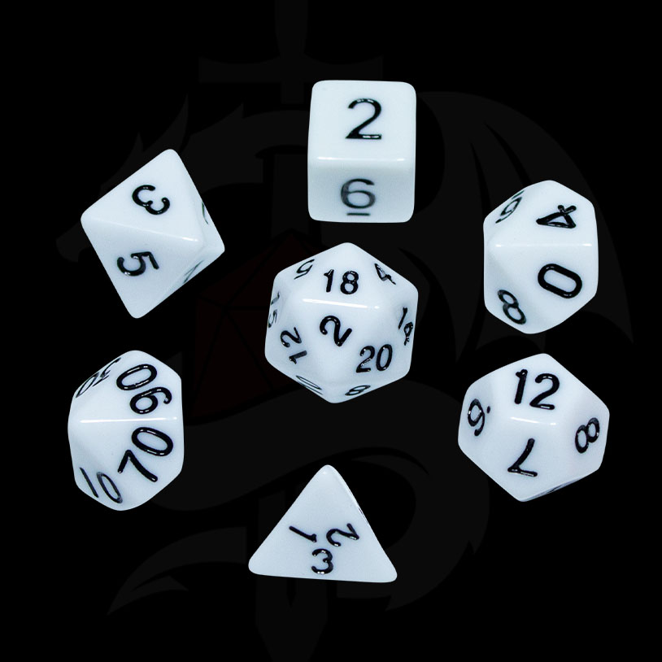
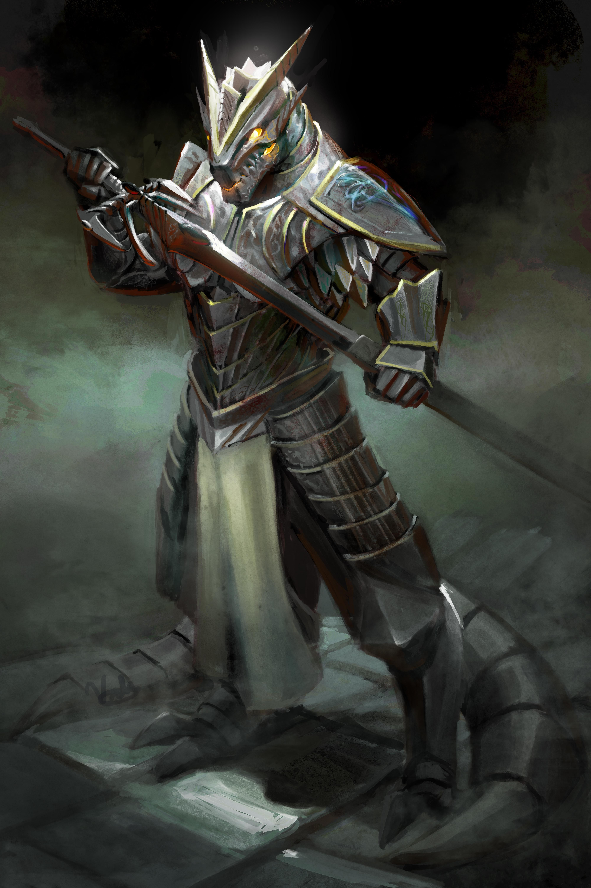

Dungeons & Dragons what is it?
D&D is a tableTop role playing game that many people can get into. There is many things to learn about this but this cite should cover some of the basics on how to start you're Adventure!
The question still Remains What is it?
- D&D is of course a tabletop game that the "Dungeon Master" DM for short creates
- A Dungeon master is someone who ends up leading the game and telling the players how it goes
- The game can last for a while up to 2-4 hours but it all depends on how long the DM makes it
- You Can embark on a journy with all kinds of diffrent paths
- Fight along the way inside Dungeons, ruins, and many places that have loot!
Dice Introduction
The image above is just some of the dice types there is. For D&D Dice is the second most important part of the game. There is many uses to these dice and there is many types (click here to go to the Dice Types page!)to go over some more important than others. A few of the things that dice do are as follows and will gove over again in Dice Types:
- They can roll for stats for Characters
- they can roll for damage on specific things
- And they can help the DM set up the acctual game
Charactures of D&D
There is so many Characters in D&D that it is crazy. A Character Sheet. Is used to better orgainze all the Characters. and a few things of what they do are:
- A discription of your Characters traits, flaws, general stats
- A Character sheet can help deteterman what the class you choose does
- You can have many Characters but based on what the DM has in store you only get to really choose 1